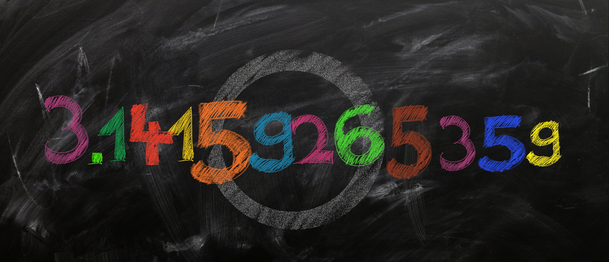
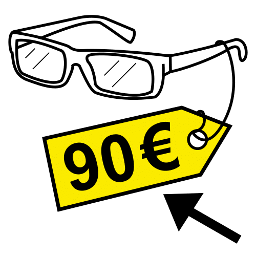
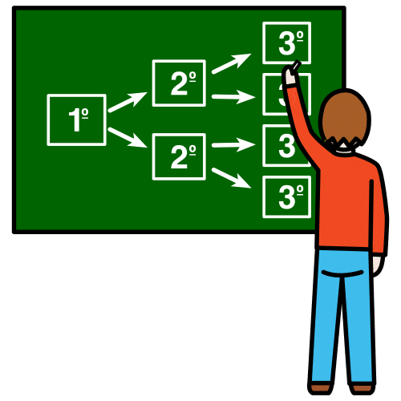
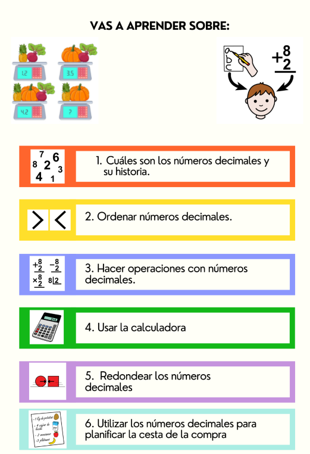
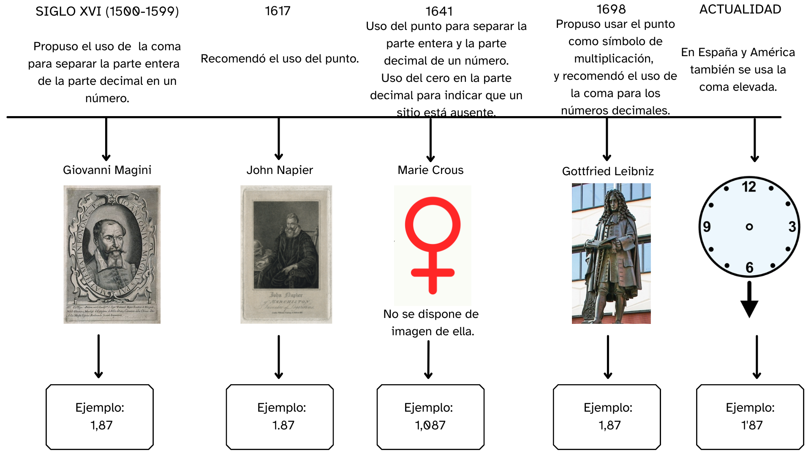

En las páginas anteriores has comprobado cómo para calcular la energía de los alimentos, las cantidades de los diferentes nutrientes y el coste de un menú has tenido que utilizar números decimales.
Es el momento de aprender todo lo necesario acerca de los números decimales para poder afrontar nuestro proyecto, ya que necesitaremos poder ordenarlos y operar correctamente con ellos.


Definición:
Es la cantidad de dinero que cuesta una cosa.
Ejemplo:
El coste de estos filetes es de 25 euros.
1. ¿Qué vas a aprender?
La planificación de la compra está llena de números decimales y realización de cálculos matemáticos.
A continuación, vas a seguir aprendiendo sobre:
- Cuáles son los números decimales y su historia.
- Ordenar números decimales.
- Hacer operaciones con números decimales: suma, resta, multiplicación y división.
- Usar la calculadora.
- Redondear números decimales.
- Utilizar los números decimales para planificar la cesta de la compra.

Definición:
Organizar el desarrollo de un plan o actuación.
Ejemplo:
Debes hacer una planificación del estudio para aprobar el examen.
Apoyo visual

2. ¿Sabías que.....?
Audio
Apoyo visual
Los separadores decimales son símbolos utilizados para diferenciar la parte entera de la parte decimal de un número. Aunque se ha intentado utilizar un solo símbolo, se ha decidido aceptar varios. ¡Veamos su historia!
